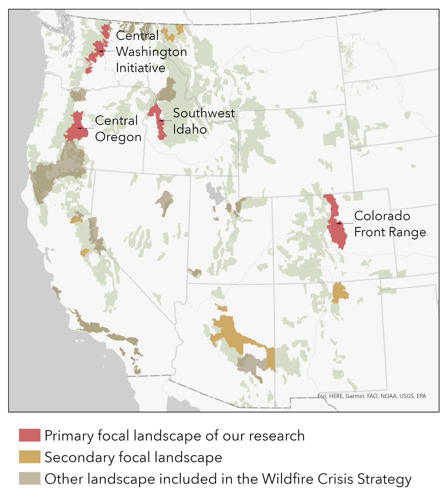

About the Project
Wildfires across the United States have resulted in rising ecological and social costs, with more homes and communities threatened by wildfire, as a result of a legacy of fire exclusion on the landscape, changing fuels and climate, and an expanding WUI. The 10-year WCS lays out a sweeping vision for unprecedented investment in forest health and wildfire risk reduction for communities, with goals of treating up to 20 million acres on National Forests and supporting treatment of up to 30 million acres of other federal, state, Tribal, private, and family lands. Rather than a one-time investment, these fuel treatments are intended as a “down payment” on a long-term commitment to proactive management, conducted collaboratively with partners. As such, it is critical to not only assess the community risk reduction outcomes of vegetation mitigation, but also how these activities combine with community and stakeholder efforts to enhance capacity, build social capital, and ensure long-term commitment to wildfire adaptation across scales.

A combination of building- and landscape-level management actions will determine future wildfire losses, yet little is known about how increased federal investments through the WCS are combining with or leveraging other capacities, networks, and adaptations within and across landscapes. Complex patterns of land ownership mean it is critical to understand how non-FS actors are mitigating and managing risk, in collaboration with or independent of federal investments. This includes the extent to which the existing mitigation actions affect the social acceptability of future proposed work. Accordingly, we propose a cross-site research investigation to systematically examine adaptation outcomes within WCS priority landscapes, integrating information on actors across the governance arena - including (but not limited to) municipal and regional governments, fire protection districts, civic stewardship groups, homeowner’s associations (HOAs), and residents with Forest Service investments in those areas.
At the outset of the project, we will form a research council of researchers and practitioners (Section 8) that will advise the project team to ensure the applicability of the research for a wide range of audiences. It will include, but is not limited to, advisers in Table 8. We will collate existing data such as Community Wildfire Protection Plans (CWPPs) and CWDGs, Monitoring Trends in Burn Severity data, Forest Service Activity Tracking System (FACTS) database, Schedule of Proposed Actions (SOPA), Rocky Mountain Research Station Fire lab data on wildfire hazard potential and Wildfire Risk to Communities mapping tool, internet-based research of fire losses, and existing data from Co-Management of Fire Risk Transmission (CoMFRT) and the Stewardship Mapping and Assessment Project (STEW-MAP).
1. Communications
Using big data, social media, and conventional media we will rapidly characterize wildfire risk communications for all 10 priority WCS landscapes. First, we will analyze wildfire risk communications with datasets acquired though partner FilterLabs.AI, which uses artificial intelligence technology to scrape internet communications, including topics (themes), and sentiments of groups, individuals, and communities. Second, we will gather social media (e.g., Twitter, Reddit, etc.). Drawing on these big data and social media datasets, we will pilot a web-crawler analysis to elicit organizational-level communication networks from groups’ websites. We will triangulate these data with conventional media sources. Overall, this work will analyze communications networks, identify key brokers, and characterize messages that are being transmitted about wildfire risk and mitigation.
2. Governance networks
We will identify and map key actors, brokers, and institutions related to environmental governance and shared stewardship, focusing on four key landscapes. We will utilize existing datasets from CoMFRT (Central Oregon, Central Washington) and STEW-MAP (Denver Front Range) and harmonize these protocols to inform future data collection on another first-round WCS site (Southwest Idaho). Mapping governance will require us to develop geospatial maps of actors across sectors in priority landscapes including new civic stewardship capacity maps and HOA stewardship capacity maps. Using digital surveys, we will map the geography and scale of work of stewardship actors to identify local hotspots of cross-boundary mitigation work. We will also build a new geospatial dataset of HOAs and HOA-managed open spaces across the landscape, building on a preliminary, first-generation map developed for eight counties of the Denver Front Range by members of this team, and work to replicate that approach within the other three WCS. We propose to do this because HOAs are an overlooked but increasingly important source of ownership and governance in WUI areas. Combined, these efforts will help managers to better understand civic capacity across the landscape.
3. Adaptations
Working with the key actors and institutions identified in Objectives 1 and 2, we will then create geospatial data and descriptions of the required and voluntary mitigation and adaptation efforts for different scales. For all 10 initial priority landscapes we will identify key planning documents such as CWPPs, Hazard Management Plans (HMPs), County Comprehensive Plans, etc., to rapidly characterize the policy adaptation arena, spatialize relevant jurisdictions, and share findings in a white paper. We will then focus on a deeper compilation of adaptation efforts in our four focal landscapes. This effort will start with existing data (e.g., FACTS, state-level data on fuel treatments, parcel and assessor data, including year built and structural hardness characteristics, existing American Community Survey (Census Bureau) data on housing and demographics). We will use geospatial data and interviews to examine where adaptation efforts have been most common in the landscape, where innovations and successful implementation have occurred, and where gaps remain. Interviews with key community stakeholders will explicitly ask about the critical social and ecological conditions that influence adaptation actions (i.e., How do participants perceive fuel treatments contributing to ecological resilience and risk reduction for communities? How do concerns about ecological health combine with risk to communities, and ability to engage in risk reduction actions at different scales?).
4. Synthesis
Finally, we will synthesize the information we collate on governance, communication, and adaptations across land ownerships to create a comprehensive assessment of adaptation outcomes and best practices in collaborative risk reduction. We will ground this work in a workshop for researchers and advisors to share results and gain feedback for final products (see project schedule in Section 9). This synthesis will highlight characteristics of communities, landscapes, and interventions that shape changes in community wildfire resilience. We anticipate adaptation outcomes will reflect not only WCS investment, governance, and communications, but also past wildfire history, potential community exposure, and past fuel treatment investments among other social and ecological factors. Within firesheds, we will look for evidence of collaboration and examine interdependencies between communities.
We will share project findings, products, and deliverables through community outreach workshops, research briefs, StoryMaps (e.g., STEW-MAP StoryMap), integrated geodatabases (Section 7). Finally, an overarching goal of this project is to pilot a reproducible workflow that could be repeated on future priority landscapes and over time to assess changes in governance, communication, and adaptation.